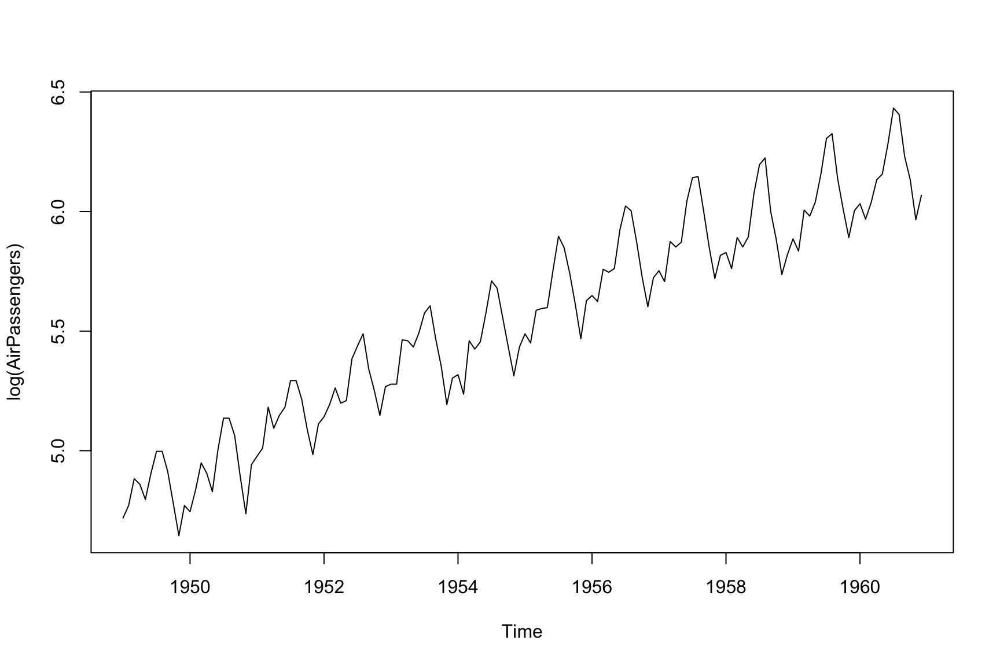
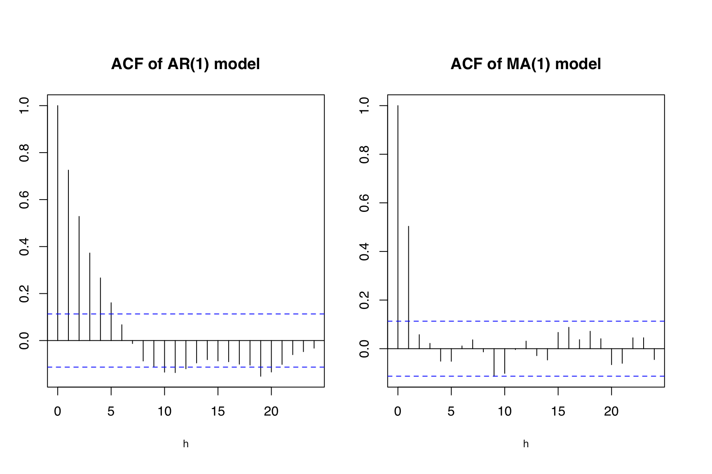

flowchart TD A[RegARIMA Modeling] --> B(Model Comparison / Diagnostics) B --> A A --> C[Seasonal Adjustment] C --> D[Seasonal Adjustment Diagnostics] D --> C D --> A
5 regARIMA Model
You are reading an early draft of Seasonal Adjustment in R. This chapter should be readable but needs polishing.
It is part of the course materials intended for Dec 21, 2022.
An important part of the X13 procedure is regARIMA modeling. It sits above seasonal adjustment at the top of the flow chart describing progress towards an adequate adjustment. As with all statistical modeling, the process to find the best model is iterative in nature. This is represented as a loop at the left of our flow chart. An analyst can use statistical tools and subject matter expertise to fine tune and create an overall regARIMA model that is satisfactory to be used and proceed to the seasonal adjustment step of our work flow.
Depending on if you ultimately choose to perform a SEATS or X-11 seasonal adjustment, your usage of a regARIMA can differ. Both seasonal adjustment methods will use the regARIMA model to forecast the series in order to apply symmetric filters and extract components. (but I thought SEATS was model-based? What do you mean SEATS uses filters? More on this in Chapter XXX). SEATS will use the ARIMA model to derive components for the trend, seasonal and irregular terms. The regARIMA model is also the place to include exogenous information or regressors into your seasonal adjustments. Regressors such as holiday effects, additive outliers, levels shifts, or any user-defined effect can be included in your regARIMA model. This can be thought of as solely a utility to forecast extend your series or a detection method to do inference. In practice it is useful to use regARIMA modeling to answer questions such as, “Does my series have trading day effects?” or “Does this outlier effect my results?”. Another reason for regARIMA modeling is to include exogenous regression variables in our analysis. These include, but are not limited to, moving holiday effects, trading day, outliers and level-shifts.
5.1 SARIMA model
As the name implies, there are two components that one needs to understand when fitting a regARIMA model; namely regression and ARIMA. Furthermore, the ARIMA part is made up by a differencing order and the stochastic ARMA portion. In this chapter, we try to break these three components down to the most fundamental ingredients without an overly technical exposition. Essentially, providing readers with enough information about each topic to understand the rest of this book and go off and perform satisfactory seasonal adjustment. The interested reader is encouraged to find material devoted to each of these components separately to more fully understand them.
ARIMA is an acronym describing the three parts of the modeling paradigm. AR = autoregressive, I = integrated (differenced), and MA = moving average. The prefix auto or “self”, explains the AR portion perfectly. We model the current observation with lagged values from the past. This is illustrated with the classic autoregressive model of order 1:
\[ Y_t = \phi Y_{t-1} + a_t \]
where \(Y_t\) is the observed time series, \(\phi\) is a coefficient to be estimated and \(\{a_t\}\) is an uncorrelated sequence of errors similar to that of standard linear regression. This model is notated AR(1). If instead of a single lag we used \(p\) lags, the model would be and AR(\(p\)) and have structure:
\[ Y_t = \phi_1 Y_{t-1} + \phi_2 Y_{t-2} + \cdots + \phi_p Y_{t-p} + a_t \]
where now we have \(p\) coefficients \(\phi_1, \phi_2, \ldots, \phi_p\) to be estimated.
The moving average part of ARIMA model is similar in notation and reflects the number of lagged values of the error sequence should be included. For example, an MA(1) model with coefficient parameter \(\theta\) is:
\[ Y_t = a_t + \theta a_{t-1} \].
Note that instead of doing self-regression we include past values of the unobserved errors in the model at time \(t\). If instead of a single lag we wanted \(q\) lags of the past error terms, we would have an MA(\(q\)) model:
\[ Y_t = a_t + \theta_1 a_{t-1} + \theta_2 a_{t-2} + \cdots + \theta_q a_{t-q} \].
When we combine these two ideas we can model \(Y_t\) with \(p\) lagged values of itself together with \(q\) lagged values of the unobserved errors. Together it makes an ARMA(\(p\), \(q\)) model, one of the fundamental ingredients to the regARIMA model. For a practitioner the automatic modeling done in X13 is often sufficient to find an appropriate value for \(p\) and \(q\) and hence a well fitting ARMA model. If it more important from a seasonal adjustment perspective to correctly specify the differencing and regression variables in your overall regARIMA model.
5.2 Differencing
ARMA models work best for stationary time series. This means the mean does not depend on time (such as increasing trend) or have a correlation structure that changes. Many techniques could be used to take a non-stationary time series and transform it to stationarity, one ubiquitous method is differencing. There is a famous results that states if you difference your series \(k\) times it will remove a polynomial trend of degree \(k\). Essentially, if you observe a time series with a linear trend then first differencing will remove the trend. If a time series has quadratic trend (polynomial of order 2) then differencing twice will remove that trend. A similar phenomenon can happen at seasonal lags and often a time series will also require seasonal differencing to reduce it to stationary. The order of differencing, also called the intgreation order, for the non-seaosnal and seasonal parts of our model are usually notated as \(d\) and \(D\) respectively. When we bring the integration order together with the stocastic model specification we have the notation \[\text{SARIMA}\underbrace{(p, d, q)}_{\text{non-seasonal }}\underbrace{(P, D, Q)}_{\text{seasonal}}.\] This can be seen easily with an example. Consider the log transformed AirPassengers series.

We see a clear increasing trend and seasonal pattern. Let’s call the observed series \(X_t\). We can difference the series to make \(Y_t = \Delta X_t = X_t - X_{t-1}\). A plot of \(Y_t\) looks like

The trend has been removed however some seasonal trend (strong seasonal patterns) still exist. Apply seasonal differencing to the already first differenced series \(Y_t\):
\[ Z_t = Y_t - Y_{t-12} \]
A plot of \(Z_t\):

Here we can see that both the original linear trend and seasonal pattern are removed and what is left is a stationary process that can adequately be modeled with an SARMA(0, 1)(0, 1) model. When you bring in the integration (differencing) order of one for the seasonal and non-seasonal components, we are left with the model named after this exact time series! The so called ``airline model’’ is the SARIMA(0, 1, 1)(0, 1, 1) and the terminology came to popularity via Box and Jenkins, “Time Series Analysis, Forecasting and Control” textbook.
5.3 Fitting SARIMA (optional)
Here we present a very oversimplied way to start to understand what values of \(p, P, q\) and \(Q\) you can investigate for your time series of interest. Recall that earlier it was mentioned that using automatic model identification is sufficient for most to get an adequate seasonal adjustment. Hence, this is simply for the interested reader to begin to gain additional intuition into the stochastic structures involved in their series and the types of structures the automatic modeling procedures look at. One of the main tools in a time series analyist tool box is the autocorrelation function (ACF). This is a function that returns the correlation between observations \(h\) time units apart throughout the entire sample. So for \(h=2\) this means looking at the correlation between the pairs \((X_1, X_3), (X_2, X_4), (X_3, X_5), \ldots\). Then a way to build a SARIMA model is to match the sample ACF and the theoretical ACF of a given model. The main point distinguishing an AR(\(p\)) and MA(\(q\)) is how their theoretical ACF behaves. An AR(\(p\)) will have ACF the has exponential decay as \(h\) increases. For example, an AR(1) ACF is \[\rho(h) = \phi^h\] An MA(\(q\)) models ACF will be non-zero for the first \(q\) lags and then cutoff to zero thereafter. The ACF of an MA(1) is \[\rho(h) = \begin{cases}
~~1 & h = 0 \\
\frac{\theta}{1 + \theta^2} & h = 1 \\
~~0 & \text{otherwise}
\end{cases}
\] In practice of course the difference between decay and cut-off can be nebulous to detect but the interested reader is encouraged to explore the arima.sim() function the look at the sample ACF with the acf() function. As you increase the sample size it will converge to the theoretical ACF value and you can start to see the structures just discussed.
x_AR <- arima.sim(model = list(ar = .75), n = 300)
x_MA <- arima.sim(model = list(ma = .75), n = 300)
tsbox::ts_plot(cbind(x_AR, x_MA))
op <- par(mfrow = c(1, 2), mar = c(5, 2, 4, 2))
acf(x_AR, xlab = "h", main = ""); title("ACF of AR(1) model")
acf(x_MA, xlab = "h", main = ""); title("ACF of MA(1) model")
par <- op

5.4 Regression
We have discussed SARIMA modeling (both the SARMA and differencing), now we see how exogenous regression variables come into play.
The regARIMA model takes the form \[ f\left(\frac{Y_t}{D_t} \right) = \boldsymbol{\beta}^\prime {\mathbf X}_t + Z_t .\] Here \(Y_t\) is the observed time series. The function \(f\) represents a transformation, most commonly used is the log transform ie \(f(x) = \log(x)\). \(D_t\) is any intervention that has taken place prior to any transformation or modeling. This intervention is usually subjective and customized for individual series on an as-needed basis. For example, if a soybean farmer strike occurred and the soybean export series suffered for its duration. This type of event might adversely affect the seasonal adjustment filters and automatic model identification routines and can be mediated as an initial step. If no transformation or intervention is needed the model form is: \[ Y_t = \underbrace{\boldsymbol{\beta}^\prime {\mathbf X}_t}_{\text{Regression}} + \underbrace{Z_t}_{\text{ARIMA}} .\]
The regression variables appear in the columns of the design matrix \({\mathbf X}_t\) and \(Z_t\) is an ARIMA process. This last assumption on \(Z_t\) is what distinguished a regARIMA model from more classic linear models and multiple linear regression where error terms are assumed uncorrelated.
In order to achieve a suitable seasonal adjustment it is important to get the regARIMA model correct. For most dataset the built in automatic modeling features of the X13 program will be suitable to detect a reasonable model. This can be used as a starting point for more rigorous regARIMA model development or used as the final regARIMA modeling choice for your seasonal adjustment needs. We evoke automatic model identification through the XXX spec. The default behavior of the R seasonal package is XXX which includes automatic model identification.
Automatic and manual model choice
As an aside, the general rule is to not use automatic modeling in production. This mean, if you are going to include seasonal adjustment as part of a large scale data processing that occurs regularly (say monthly), then it is not advisable to have automatic model identification run every month. Instead, an alternative process, is to run automodel once and then fix the model choice in the XXX spec file. This does not need to be done manually since the static() function from the seasonal package can do this for you.
| Outlier Type | Automatic Detection Available? |
|---|---|
| Additive outliers (AO) | Yes (default) |
| Level shifts (LS) | Yes (default) |
| Temporary level shifts (TL) | Yes |
| Temporary changes (TC) | No |
| Ramps (RP, QI, QD) | No |
| Seasonal outliers (SO) | No |
5.5 Case Study: AirPassengers
Consider the default seasonal adjustment:
Notice the value NULL indicates no ARIMA model is specified and the returned arguments for the automdl spec indicate it is active during the X13 run.
seasonal::udg(m, "automdl")
#> automdl
#> "(0 1 1)(0 1 1)"Indicates that automatic modeling identified the (0 1 1)(0 1 1) model as the best choice. If we want to hardcode this model for subsequent runs, and turn off automatic model identification, this can be done via
There are many options you can modify when searching for outliers in your series. Some of the most practical options to start your exploration are the type, critical value and span that you would like to search.
Here is an example of using span to limit the outlier search to the last few years of a series:
m_span <- seas(AirPassengers,
outlier.types = c("ao", "ls", "tc"),
outlier.critical = 4.0,
outlier.span = "1958.jan, ")
summary(m_span)
#>
#> Call:
#> seas(x = AirPassengers, outlier.types = c("ao", "ls", "tc"),
#> outlier.critical = 4, outlier.span = "1958.jan, ")
#>
#> Coefficients:
#> Estimate Std. Error z value Pr(>|z|)
#> Weekday -0.002644 0.000604 -4.377 1.20e-05 ***
#> Easter[1] 0.021321 0.008395 2.540 0.01110 *
#> MA-Nonseasonal-01 0.235404 0.083756 2.811 0.00495 **
#> MA-Seasonal-12 0.543743 0.074644 7.284 3.23e-13 ***
#> ---
#> Signif. codes: 0 '***' 0.001 '**' 0.01 '*' 0.05 '.' 0.1 ' ' 1
#>
#> SEATS adj. ARIMA: (0 1 1)(0 1 1) Obs.: 144 Transform: log
#> AICc: 965.3, BIC: 979.2 QS (no seasonality in final): 0
#> Box-Ljung (no autocorr.): 28.26 Shapiro (normality): 0.9829 .m_nospan <- seas(AirPassengers,
outlier.types = c("ao", "ls", "tc"),
outlier.critical = 4.0)
summary(m_nospan)
#>
#> Call:
#> seas(x = AirPassengers, outlier.types = c("ao", "ls", "tc"),
#> outlier.critical = 4)
#>
#> Coefficients:
#> Estimate Std. Error z value Pr(>|z|)
#> Weekday -0.0029497 0.0005232 -5.638 1.72e-08 ***
#> Easter[1] 0.0177674 0.0071580 2.482 0.0131 *
#> AO1951.May 0.1001558 0.0204387 4.900 9.57e-07 ***
#> MA-Nonseasonal-01 0.1156204 0.0858588 1.347 0.1781
#> MA-Seasonal-12 0.4973600 0.0774677 6.420 1.36e-10 ***
#> ---
#> Signif. codes: 0 '***' 0.001 '**' 0.01 '*' 0.05 '.' 0.1 ' ' 1
#>
#> SEATS adj. ARIMA: (0 1 1)(0 1 1) Obs.: 144 Transform: log
#> AICc: 947.3, BIC: 963.9 QS (no seasonality in final): 0
#> Box-Ljung (no autocorr.): 26.65 Shapiro (normality): 0.9908The default critical value is set based on the length of the outlier span. Notice the MA-Nonseasonal-01 value when comparing m_span with m_nospan. We see the choice of span, and ultimately the choise to include an outlier in your model can have a dramatic effect on the estimated regARIMA parameters.